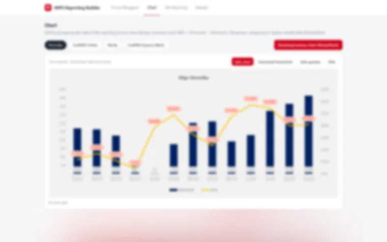

Telkomsel, 2026
tNPS reporting automation
- Question
- Can recurring tNPS and traffic reports be produced without a six hour manual run?
- Data
- Channel exports for 3 recurring workflows done manually in Excel.
- Method
- A Python reporting builder: upload, clean, generate, preview, export.
- Result
- 6 hours down to 5 to 10 minutes per run, 97% faster.